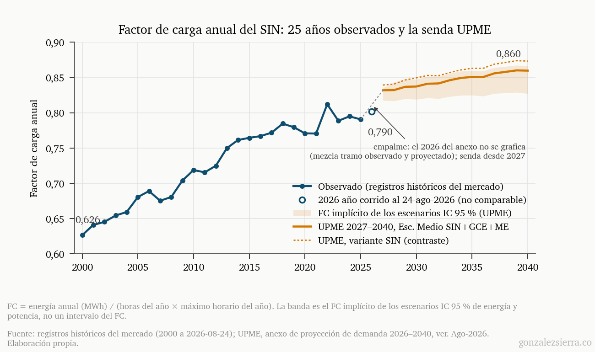
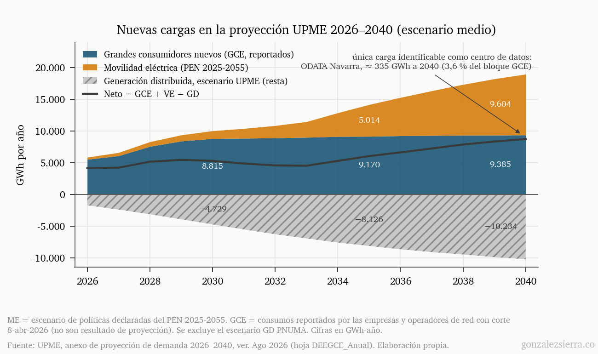
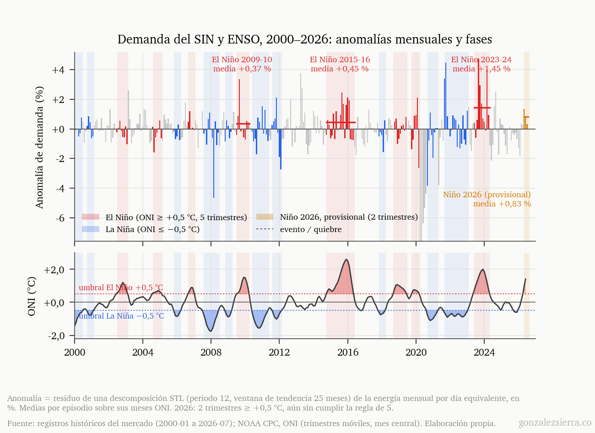
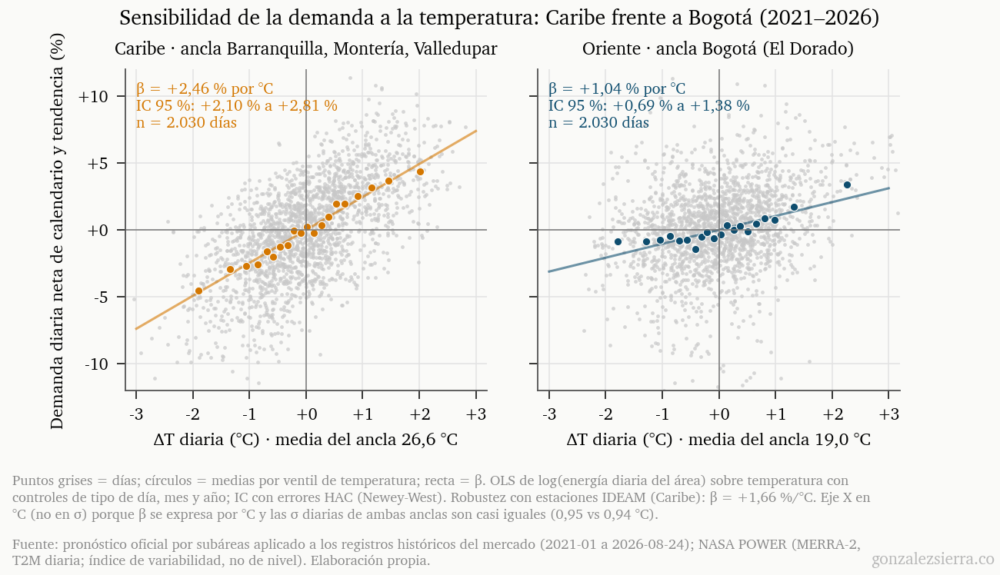
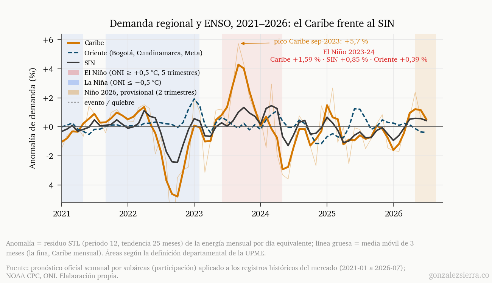
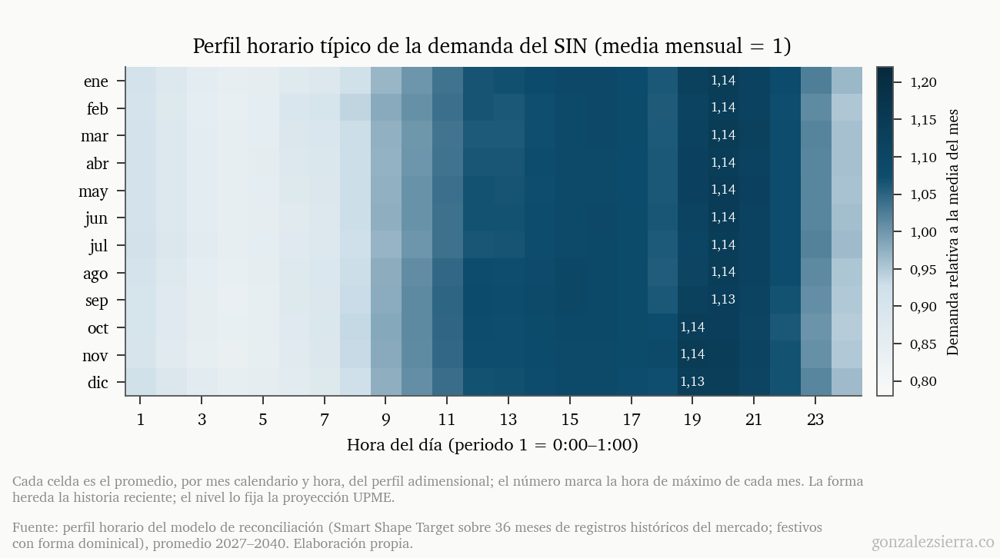

1. El récord que llegó fuera de temporada
El 20 de agosto de 2026, a la hora 20, el Sistema Interconectado Nacional alcanzó 12.576 MW: el máximo horario de su historia. La cifra supera en 2,9 % el récord anterior — 12.220 MW, del 11 de diciembre de 2025 — y trae un detalle que importa más que su magnitud: llegó en agosto. Desde 2013, el pico anual del SIN se había acomodado siempre entre septiembre y diciembre; durante la década anterior, casi invariablemente en diciembre. Un máximo histórico en pleno agosto no es solo un número más alto — es la curva de demanda comportándose distinto.
No es un dato aislado. En lo corrido de 2026, la demanda de energía crece 5,6 % frente al mismo tramo de 2025, y los últimos doce meses completos acumulan 4,1 %. Para dimensionarlo: la proyección oficial más reciente de la UPME, publicada apenas semanas antes del récord, estima para todo 2026 una demanda máxima de potencia de 12.142 MW en su variante base — la que excluye las cargas nuevas. Esa cifra ya había sido superada en diciembre de 2025, antes de que el documento circulara, y agosto la dejó 434 MW atrás.
Los dos primeros artículos de esta serie miraron la oferta: la hidrología del Súper Niño 2026-27 y el mecanismo de última instancia que se activaría si el verano se complica. Este tercero mira el otro lado del balance — el lado que crece más rápido de lo que solemos discutir, que está cambiando de forma, y que a las puertas de El Niño recibe mucha menos atención institucional de la que merece. Empecemos por los datos.
2. Veinticinco años de demanda: crece más rápido y se aplana
![Serie mensual de la demanda del SIN entre 2000 y 2026 en GWh por día equivalente, con la serie desestacionalizada en azul y una tendencia lineal a trozos en naranja punteada. Tres líneas verticales grises marcan los quiebres de marzo de 2008, mayo de 2016 y marzo de 2020, este último coincidente con la pandemia; sobre cada segmento se anota su crecimiento anualizado: 3,85, 2,92, 3,42 y 3,93 por ciento. Bandas rojas y azules de fondo señalan los episodios de El Niño y La Niña, y un marcador naranja al final de la serie señala el récord de potencia de 12.576 MW del 20 de agosto de 2026.](assets_demanda/F1_serie_mensual_quiebres.png)
Los registros históricos del mercado permiten reconstruir la demanda horaria del SIN desde el año 2000. La historia en tasas compuestas: 3,42 % anual entre 2000 y 2009, 2,63 % entre 2010 y 2019, y 3,68 % entre 2020 y 2025. Un análisis formal de quiebres estructurales sobre la serie mensual desestacionalizada — tendencia lineal a trozos, con el número de quiebres elegido por criterio de información — identifica tres: marzo de 2008, mediados de 2016 y marzo de 2020. Ninguno en 2024, y conviene decirlo de frente: la aceleración reciente no es un quiebre detectable estadísticamente. Lo que sí es: el segmento que arranca en 2020 tiene la pendiente más alta del siglo, 3,93 % anual — con la salvedad honesta de que parte desde el mínimo de la pandemia, así que una fracción de esa pendiente es recuperación. Medida desde 2023, la tasa compuesta es un más modesto 2,8 %; medida en los últimos doce meses, 4,1 %. Se mire como se mire, la demanda colombiana de esta década crece más rápido que la de la anterior.
Pero el nivel es solo la mitad de la historia. La otra mitad es la forma — y para hablar de forma hay que hablar del factor de carga.
¿Qué es el factor de carga?
\[ FC_{anual} = \frac{E_{año}}{P_{máx} \times 8.760\,h} \]donde \(E_{año}\) es la energía consumida en el año y \(P_{máx}\) el máximo horario. Con el ejemplo real: en 2025, \(FC = \frac{84.618\ \text{GWh}}{12.220\ \text{MW} \times 8.760\ \text{h}} \approx 0{,}79\). El factor de carga mide qué tan “llena” está la curva de carga respecto a su propio pico: un FC de 1,0 sería consumir el máximo las 24 horas del año; valores bajos describen una curva con valles profundos de madrugada y puntas pronunciadas al anochecer. Importa por una asimetría fundamental: el sistema se dimensiona para el pico, pero se paga con la energía. Cuando el FC sube, cada megavatio de infraestructura trabaja más horas — buena noticia económica. Pero también desaparecen las horas de holgura donde antes cabían, sin consecuencias, los errores de pronóstico.
En 2000, el factor de carga anual del SIN era 0,626. En 2025, 0,790. Dieciséis puntos de aplanamiento en 25 años, a un ritmo notablemente estable de unas siete milésimas por año, y verificados contra dos series independientes de demanda que coinciden a menos de media centésima. La proyección de la UPME espera que la deriva continúe: 0,860 en 2040. Una curva de carga que se llena por los valles mientras su pico rompe récords fuera de temporada.

Hay un patrón más en estos veinticinco años, y es el que anticipa la sección 4. En el último quinquenio, la demanda anual creció a saltos desiguales: 5,4 % en 2023, 2,6 % en 2024, 1,6 % en 2025, y el 5,6 % que acumula 2026. Los dos años de +5 % son, exactamente, los dos años con fenómeno de El Niño declarado o en formación. Puede ser coincidencia — dos observaciones no hacen una ley — pero es el tipo de coincidencia que vale la pena mirar con cuidado. Lo haremos con datos de temperatura en la sección 4.
3. Las cargas que vienen (y la que no aparece)
La proyección oficial de demanda 2026–2040, en su revisión de julio de 2026, espera que el SIN crezca al 2,46 % anual compuesto en su variante base. Al añadir las cargas nuevas — grandes consumidores especiales y movilidad eléctrica — la tasa sube a 3,05 %: seis décimas de punto porcentual anuales que, compuestas a 2040, equivalen a unos 19.000 GWh adicionales, casi una cuarta parte de la demanda actual. Una nota metodológica: las tasas de crecimiento citadas en este artículo se calculan directamente del anexo de datos publicado por la UPME (los promedios del documento soporte usan una convención de cálculo distinta).

¿De qué están hechas esas cargas nuevas? Dos bloques muy distintos. El primero, la movilidad eléctrica: pasa de 334 GWh en 2026 a 9.604 GWh en 2040 — se multiplica por 29 — hasta igualar en tamaño al bloque completo de grandes consumidores. Es, por lejos, la carga de mayor crecimiento del sistema, aun cuando la propia UPME advierte que su escenario es el de baja ambición y que la meta nacional de 600.000 vehículos eléctricos a 2030 no se alcanzará. El segundo bloque, los grandes consumidores especiales, crece de 5.526 a 9.385 GWh pero se aplana desde 2030, y su composición dice algo importante sobre qué significa “electrificación industrial” en Colombia hoy: los mayores consumos corresponden a campos petroleros (Rubiales, San Fernando), refinación (Reficar, Ecopetrol Magdalena), minería de carbón, siderurgia y cemento. La transición energética colombiana, vista desde la demanda, es por ahora la electrificación de sus industrias extractivas.
Y luego está la carga que no aparece. En las 69 páginas del documento de proyección y en las catorce hojas de su anexo, la palabra “datacenter” — o “centro de datos” — no figura ni una vez. Entre los grandes consumidores hay una sola carga identificable con certeza como tal: ODATA Navarra, del operador latinoamericano de centros de datos adquirido por Aligned Data Centers, con entrada prevista en 2027 y un consumo que escala de 105 a 335 GWh anuales — y quizás una segunda, “Tenjo 1”, en la misma zona de la sabana de Bogotá donde el sector ya opera. Del orden de 400 GWh a 2040, en el escenario más generoso: una fracción del 0,3 % de la demanda proyectada, en el momento en que los centros de datos redefinen los balances eléctricos de medio mundo.
Sería injusto llamarlo un error de proyección, porque no hay proyección que corregir. El propio documento lo declara: el volumen de los grandes consumidores nuevos “no es resultado de un ejercicio de proyección” — es la transcripción de lo que las empresas y los operadores de red reportaron, con corte a abril de 2026. Quien pidió conexión, existe; quien no la ha pedido, no. Para cargas industriales de maduración larga, el método es defendible. Para una industria capaz de decidir en dieciocho meses dónde instala cientos de megavatios, es una ventana ciega — y a ella volveremos en la sección 6, porque no es la única.
4. El Niño: presión adicional en el peor momento posible

Empecemos por precisar la magnitud del fenómeno, porque la credibilidad de esta serie se construye midiendo antes de afirmar. Aislando la anomalía mensual de demanda — el residuo que queda tras remover la estacionalidad, es decir, el patrón de consumo que se repite todos los años por razones de calendario y clima, y la tendencia de crecimiento de fondo — los episodios de El Niño de este siglo elevaron el consumo en promedio +0,37 % (2009-10), +0,45 % (2015-16) y +1,45 % (2023-24). El episodio en formación de 2026 va, provisionalmente, en +0,83 %. Frente a una variación mensual típica de ±1,5 % — la fluctuación normal de la demanda entre un mes y otro — el efecto es real y medible, pero El Niño no es el único factor que dispara la demanda: actúa sobre una tendencia que ya es la más empinada del siglo y en simultáneo con la entrada de cargas nuevas. La pregunta relevante es por qué existe ese incremento y dónde se concentra.
La respuesta es la temperatura, y ahora podemos medirla. Con un índice nacional de temperatura construido de estaciones ancla por región, la demanda diaria del SIN — neta de calendario y tendencia — responde +2,1 % por cada grado Celsius (IC 95 %: 1,8–2,4). La aritmética del canal es directa: un episodio de El Niño que sostenga temperaturas medio grado por encima de lo normal equivale a un punto porcentual de demanda adicional, día tras día, durante los meses que dure. Ese es exactamente el orden de magnitud de los episodios observados: el aumento tiene mecanismo físico, no es una curiosidad estadística.

Y no se reparte parejo. La sensibilidad térmica de la costa Caribe está entre +1,7 y +2,5 % por grado según la especificación — con datos satelitales declarados como índice de variabilidad, +2,46 (IC 2,10–2,81) — mientras la de Bogotá es +1,04 (IC 0,69–1,38): intervalos que no se solapan. Por cada grado de más, la demanda del Caribe responde aproximadamente el doble que la de la capital. Un resultado adicional del análisis: la sensibilidad bogotana es positiva — a 2.600 metros, donde cabría esperar que el calor redujera el consumo asociado a calefacción y agua caliente, domina el efecto contrario. Es una cifra, no una explicación; queda anotada.

¿Se tradujo esa sensibilidad en el último Niño? En 2023-24, la anomalía del Caribe promedió +1,59 % contra +0,85 % del SIN y +0,39 % de Oriente, con un máximo regional de +5,7 % en septiembre de 2023. El signo acompaña a la hipótesis, pero seamos precisos con lo que un solo episodio permite afirmar: la diferencia Caribe–SIN no es estadísticamente distinguible con esta muestra, y otras áreas registraron anomalías comparables. La formulación que los datos sí sostienen: el Caribe es la región más sensible a la temperatura del país, y la que más crece en 2026 — +9,3 % en lo corrido del año contra +5,4 % nacional. Con una advertencia metodológica: ese crecimiento de 2026 está confundido con la entrada de grandes consumidores industriales de la propia costa — refinación, siderurgia, cemento — y no es atribuible al clima sin más análisis.
Esto cierra el pendiente de la sección 2. Los dos años de +5 % del quinquenio — 2023 y 2026 — son años Niño, y el canal térmico explica una parte: entre uno y uno y medio puntos porcentuales. El resto es la tendencia y las cargas nuevas entrando en simultáneo. No hace falta exagerar el papel del fenómeno: la superposición de los tres factores es la historia.
Porque el problema de El Niño nunca fue solo la magnitud del incremento — es el momento en que llega. El primer artículo de esta serie mostró lo que el fenómeno hace del lado de la oferta: aportes hídricos que caen 20 y 30 % bajo la media durante los meses críticos. El mismo fenómeno que retira agua de los embalses añade, vía temperatura, un punto de demanda — sobre una base que ya crece al 4 % anual y rompe récords en agosto. A la fecha de cierre de este artículo, el índice ONI acumula dos trimestres consecutivos sobre el umbral de El Niño (+0,5 °C), camino de los cinco que exige la clasificación oficial del episodio. El incremento es moderado. El margen sobre el que llega, también.
5. Pronosticar la forma, no solo el nivel — y elegir bien el escenario

Todo lo anterior — récords fuera de temporada, factor de carga en ascenso, sensibilidades regionales — apunta a la misma conclusión técnica: el número anual de demanda es cada vez menos suficiente. El sistema no se estresa en promedio; se estresa en horas concretas. La hora 20 es el máximo del día en la gran mayoría de los días del año, con un corrimiento estacional a la hora 19 entre octubre y diciembre; un jueves típico consume 4 % más que la media y un domingo o festivo 10 % menos. Dos pronósticos con la misma energía anual y formas distintas son, operativamente, dos sistemas distintos: distinta exigencia de respaldo, distinto valor del agua embalsada, distinta exposición al pico.
Pronosticar la forma es un problema matemático con nombre propio: la reconciliación jerárquica de series de tiempo. Cuando se desagrega una proyección mensual a resolución horaria y por regiones, las piezas deben sumar exactamente el total — la propiedad de coherencia — sin destruir en el proceso la morfología de la curva: la punta nocturna, el valle de madrugada, el ritmo semanal. Sobre este problema publicamos recientemente un artículo científico que propone un método de reconciliación con preservación de forma, y ese es el principio que aplicamos operativamente a la proyección colombiana: la senda mensual de la UPME se desagrega a las 8.760 horas del año y a las subáreas del sistema con perfiles construidos de tres años de historia — mes por mes, día de la semana por día de la semana, con los festivos tratados con forma dominical — bajo dos restricciones duras: las horas suman exactamente la energía mensual proyectada, y el máximo de cada mes queda anclado a la demanda máxima de potencia que la propia UPME proyecta. El resultado es la proyección oficial, pero con forma: utilizable en un modelo de despacho.
Ahora bien, una proyección con forma sigue exigiendo una decisión previa: ¿cuál escenario? La UPME publica un escenario medio con bandas de confianza, y la elección entre ellos no debería ser un acto de fe sino una decisión informada por la evidencia disponible — el estado del clima, la actividad económica, el comportamiento reciente de la demanda.
![Demanda mensual del SIN de enero de 2026 a febrero de 2027 en GWh. Línea azul con puntos para lo observado en 2026, con agosto parcial como punto hueco; línea naranja y banda sombreada para el escenario medio de la UPME con cargas nuevas y su intervalo del 68 por ciento; línea gris punteada para la variante sin cargas nuevas; entre septiembre de 2026 y febrero de 2027, dos líneas rojas punteadas por encima del escenario medio muestran el criterio térmico de más 0,5 y más 1,0 grados. Una línea vertical marca el corte de datos del 24 de agosto y un marcador señala el récord de potencia del 20 de agosto.](assets_demanda/F8_escenarios_2026.png)
El comportamiento de 2026 ofrece una primera respuesta: la demanda observada no cae en ninguna banda. Entre abril y julio, el consumo acumulado quedó 2,8 % por debajo del escenario medio con cargas nuevas — fuera de su intervalo del 95 % — y 4,0 % por encima de la variante sin ellas: en el espacio entre ambas, materializando cerca del 57 % del incremento que separa las dos proyecciones. En potencia, la lectura se invierte: el récord de agosto queda dentro del intervalo de la variante con cargas nuevas y 4,6 % por encima de la otra, que ya fue superada dos veces. La demanda real está escribiendo una trayectoria intermedia en energía y exigente en potencia — y para el verano que empieza, el criterio térmico añade su aritmética: medio grado sostenido son unos 500 GWh adicionales entre septiembre y febrero; un grado, cerca de 1.000. Ambos caben dentro de la incertidumbre del propio anexo. La conclusión operativa no es que la proyección esté mal: es que elegir escenario exige mirar los datos que van llegando — el clima, las conexiones industriales que se materializan, la temperatura — y no solo el abanico publicado. El verano 2026-27 será el banco de pruebas de ese selector de escenario, con criterio humano y evidencia cuantitativa.
Un pronóstico, sin embargo, es tan bueno como las preguntas que se hace. Y la proyección oficial de demanda del país, hoy, no se hace dos preguntas que este artículo ya mostró que importan. De eso trata la sección final.
6. La brecha institucional empieza en el pronóstico
Este artículo documentó dos ausencias en la proyección oficial de demanda: el fenómeno que la perturba con mecanismo físico medible — la UPME modela temperaturas medias por área, pero ningún escenario ENSO — y la carga que está redefiniendo los balances eléctricos de medio mundo, que aparece por transcripción y no por proyección. Sería un diagnóstico incompleto detenerse ahí, porque la gestión de la demanda no es solo pronosticarla: es darle instrumentos para responder. Y en ese frente el balance es más matizado — y más interesante — que el simple “nadie está mirando” del título.
El mandato existe hace más de una década: la Ley 1715 de 2014 ordena a la CREG establecer mecanismos para incentivar la respuesta de la demanda, desplazar los consumos de los periodos de punta y procurar el aplanamiento de la curva. El instrumento histórico es anterior incluso a esa ley: la Demanda Desconectable Voluntaria, creada en la Resolución CREG 071 de 2006 como uno de los anillos de seguridad del cargo por confiabilidad — un mecanismo mediante el cual un generador que anticipe que su energía no alcanza para cumplir sus obligaciones de energía firme puede negociar, a través de comercializadores, reducciones voluntarias de consumo. Nótese el diseño: la demanda como respaldo de la oferta, activable cuando un generador lo necesita. Veinte años después, ese sigue siendo el ADN del esquema.
El Niño 2023-24 forzó el primer experimento distinto: un programa transitorio para la participación activa de la demanda en la bolsa de energía — la Resolución CREG 101 043 de 2024, seguida de la 101 054 — con vigencia atada a la coyuntura hidrológica. La escala lograda fue modesta: las ofertas de reducción promediaron cerca de 0,5 GWh diarios, del orden del 0,2 % de la demanda de un día. Pero el piloto dejó dos cosas valiosas: la evidencia de que existe demanda dispuesta a ofertar, y agregadores operando — empresas cuyo negocio es representar consumidores en el mercado.
Y en junio de 2026, con el ONI ya cruzando el umbral, llegó el paso estructural: la Resolución CREG 101 111 de 2026 establece el programa permanente para que los usuarios, individualmente o agrupados mediante un representante, oferten reducciones de consumo en la bolsa y sean considerados en el despacho diario, con remuneración por la energía verificada. Dos rasgos de diseño merecen subrayarse: las ofertas se presentan contra una línea base de consumo horaria — la demanda compite en la bolsa con las mismas reglas de granularidad que la generación — y el representante del usuario puede ser distinto del comercializador que le presta el servicio: la figura del agregador independiente quedó formalizada. En paralelo, la Resolución CREG 101 120 de 2026 creó un programa transitorio de incentivos al uso eficiente para reducir la demanda regulada durante situaciones de estrechez energética. Reconozcámoslo sin ambigüedad: es la arquitectura regulatoria de respuesta de la demanda más completa que ha tenido el país.
Entonces, ¿dónde está la brecha? En tres lugares. El primero es el patrón temporal: cada avance nace al calor de un Niño — los transitorios de 2024 con vigencia atada al fenómeno, el programa permanente expedido con el episodio de 2026 formándose. La demanda se gestiona cuando aprieta, no como política continua. El segundo es la escala de partida: 0,2 % de la demanda diaria es el punto de arranque del nuevo programa, no un logro consolidado. Y el tercero es estructural, y es el que determina el techo de los otros dos: la medición. Los lineamientos de medición avanzada datan de 2018, con meta de 75 % de implementación nacional a 2030 — 95 % en zonas urbanas —, y la Resolución CREG 101 001 de 2022 estableció las condiciones para su despliegue en el SIN; pero el avance físico reportado no superaba el 1 % de los medidores del país, con la financiación de la infraestructura sin responsabilidades plenamente resueltas. Sin medidor horario no hay línea base residencial; sin línea base, el usuario regulado — la mayoría del consumo — no puede ofertar reducción ni recibir señal de precio alguna. La respuesta de la demanda colombiana queda, por construcción, confinada al segmento industrial y comercial grande.
La pregunta que este verano empezará a responder no es si la regulación existe — existe — sino si un mercado de respuesta de la demanda puede crecer más rápido que los medidores que lo hacen posible.
7. Qué vigilar
El verano 2026-27 encontrará al SIN con la demanda más alta de su historia, la curva más llena, y — por primera vez — un programa permanente para que esa demanda responda. Cinco indicadores concretos para seguirlo, en orden de frecuencia:
El pico contra la senda. El récord de agosto dejó la variante base de la UPME superada por segunda vez en el año y quedó a 2,7 % de la demanda máxima proyectada en la variante con cargas nuevas. Si los picos de septiembre a diciembre — la temporada histórica de máximos — siguen cerrando esa distancia, la potencia estará corriendo por delante de la proyección más exigente disponible.
La banda de energía. La demanda mensual viene trazando una trayectoria intermedia entre las dos variantes del anexo, materializando poco más de la mitad del incremento de las cargas nuevas. Ese porcentaje de materialización — qué tan rápido se conectan de verdad los grandes consumidores reportados — es el número a actualizar cada mes.
El ONI y la temperatura. A la fecha de cierre, dos trimestres consecutivos sobre el umbral de El Niño; la clasificación oficial exige cinco. Pero para la demanda el índice es solo el intermediario: la variable operativa es la temperatura — cada medio grado sostenido son unos 500 GWh de consumo adicional en el semestre, con el Caribe respondiendo al doble del ritmo de Bogotá.
El margen por las dos puntas. El primer artículo de esta serie estimó lo que El Niño hace con los aportes hídricos; este artículo, lo que hace con la demanda. La unidad común permite ponerlos frente a frente. En el mes más exigente del horizonte — enero de 2027 — aquel estudio proyecta aportes esperados de 85,4 GWh/día frente a una media histórica de 137,6: un déficit cercano a 52 GWh/día, el 38 % del recurso típico del mes. Del lado del consumo, el criterio térmico de este artículo equivale a entre 2,7 y 5,5 GWh/día adicionales con medio grado y un grado sostenidos. Por cada gigavatio-hora diario que El Niño añade a la demanda, retira del orden de diez a veinte de los aportes: en energía, el estrechamiento del margen es, ante todo, un fenómeno de oferta. Pero la presión de demanda cobra en otra moneda — el máximo de potencia, los récords fuera de temporada, la hora 20 — justo cuando el parque hidráulico pierde el recurso con que suele cubrirla. La simultaneidad de ambas presiones, cada una en su unidad, es el riesgo que ninguna de las dos cifras muestra por separado.
La respuesta de la demanda en su primer examen. Las ofertas aceptadas en bolsa bajo el programa de la Resolución 101 111 — cuántos GWh diarios, a qué precios, con cuántos representantes activos — serán la medida de si el instrumento llegó a tiempo. Su punto de partida es 0,2 % de la demanda diaria; cualquier múltiplo de esa cifra durante el verano será información nueva sobre cuánta flexibilidad tiene realmente este sistema.
La serie continuará donde los datos lo pidan. Los embalses se miran todos los días; la curva que los vacía, casi nunca. Este verano conviene mirar las dos.
Notas metodológicas
- Serie de demanda. Toda la historia observada proviene de los registros históricos del mercado (demanda comercial horaria, 2000 → 2026-08-24). Existe una segunda serie oficial (demanda real) con una brecha estable cercana al 1,5 %; las conclusiones se verificaron contra ambas.
- Series mensuales por día equivalente. Las figuras y cifras mensuales corrigen por número de días y composición hábil/sábado/domingo-festivo, para que las comparaciones entre meses y años (incluidos bisiestos) sean homogéneas.
- Anomalías. Residuo de una descomposición STL con ventana de tendencia de 25 meses, declarada; ventanas más largas amplifican el efecto ENSO estimado y no se usan.
- Tasas UPME. Calculadas directamente del anexo de datos publicado (ver. Ago-2026); los promedios del documento soporte usan una convención de cálculo distinta. El dato anual 2026 del anexo mezcla tramo observado y proyectado, por lo que las comparaciones observado-vs-proyección inician en 2027.
- Demanda regional. Participaciones del pronóstico oficial semanal por subáreas aplicadas a la demanda nacional observada, con un filtro de calidad que excluye 29 días con errores evidentes del pronóstico. La geografía de las subáreas no coincide exactamente con las áreas de la UPME y las participaciones no incluyen pérdidas del sistema de transmisión: los niveles regionales no se comparan contra cifras UPME.
- Temperatura. NASA POWER (MERRA-2, T2M diaria) como índice homogéneo de variabilidad, no de nivel; robustez con estaciones IDEAM donde la cobertura lo permite (Caribe: +1,66 %/°C). La sensibilidad se estima con regresión diaria con controles de tipo de día, mes y año, y errores robustos a autocorrelación.
- Cifras inter-artículos. Las comparaciones con el estudio de oferta de esta serie usan únicamente números impresos en esa publicación (texto o anotaciones de figuras). La conversión del criterio térmico a GWh/día usa la demanda media del semestre sep-2026 → feb-2027 del escenario medio. Aquel balance empleó como demanda la banda superior 68 % de la UPME — más exigente que lo observado en 2026 — por lo que su diagnóstico es conservador respecto a los datos de este artículo.